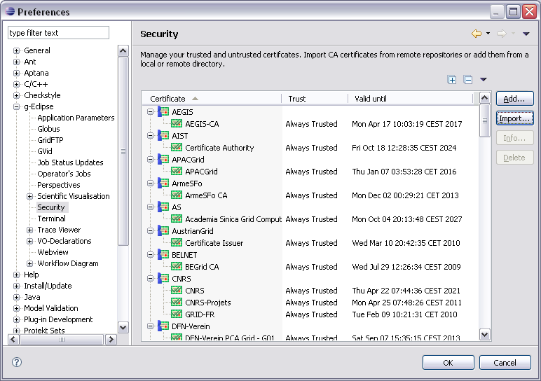

The Security Preference Page
The Security Preference Page contains a list of all trusted or untrusted
certificates. Furthermore, it provides functionalities for managing this list.
The following screenshot shows the Security Preference Page containing a
standard set of trusted CA certificates.

The certificates are displayed in a table with three columns. The first column
is used to group the certificates and displays the Common Name (CN) of each
certificate, the second column shows the trust state for each certificate and
the third column shows the date until the certificate is valid.
Each certificate can have one of three trust states, i.e.
 Untrusted -
These certificates are assumed to be untrusted. Whenever the certificate management
is asked to trust such a certificate or certificates signed by such a certificate
the trust is rejected. Untrusted certificates have priority over trusted certificates.
Untrusted certificates are not stored across sessions.
Untrusted -
These certificates are assumed to be untrusted. Whenever the certificate management
is asked to trust such a certificate or certificates signed by such a certificate
the trust is rejected. Untrusted certificates have priority over trusted certificates.
Untrusted certificates are not stored across sessions.
 Trusted -
These certificates or certificates signed by such a certificate are assumed to
be trusted. Trusted certificates are not stored across sessions. So
when restarting g-Eclipse the trusted certificates will not be available any more.
Trusted -
These certificates or certificates signed by such a certificate are assumed to
be trusted. Trusted certificates are not stored across sessions. So
when restarting g-Eclipse the trusted certificates will not be available any more.
 Always Trusted -
These certificates or certificates signed by such a certificate are assumed to
be always trusted. Such certificates are stored across sessions.
Always Trusted -
These certificates or certificates signed by such a certificate are assumed to
be always trusted. Such certificates are stored across sessions.
As stated before, the certificates can be grouped in the certificate table or
can be shown as a plain list. If they are grouped, you can choose the criteria
for grouping the certificates. All this can be done from the pop-up menu in the
upper right corner just above the certificate table. This pop-up menu has two
sub-menus that are explained as follows:
- Mode
- Flat All certificates are shown in a flat list without sub-structures.
- Grouped All certificates are grouped by a specific criteria. The criteria
used for grouping the certificates can be chosen from the "Group by" sub-menu.
- Group by
- Trust The certificates are grouped by their trust state.
- Country (C) The certificates are grouped by their Subject DN's "C" tag.
- State (ST) The certificates are grouped by their Subject DN's "ST" tag.
- Locality (L) The certificates are grouped by their Subject DN's "L" tag.
- Organization (O) The certificates are grouped by their Subject DN's "O" tag.
- Organizational Unit (OU) The certificates are grouped by their Subject DN's "OU" tag.
The Security Preference Page offers various operations to be performed on the
certificates. These operations are accessible via the buttons on the right-hand
side of the certificate table:
- Add...: Add one or more certificates from
a locally or remotely available certificates file.
- Import...: Import one or more
certificates from a certificate repository.
- Info...: Show detailed information
for the selected certificate.
- Delete: Remove the selected certificate(s) from the list of managed
certificates.